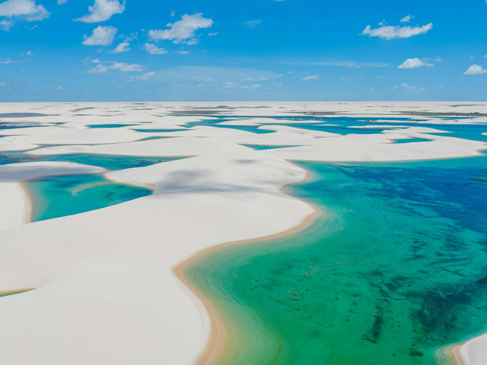

O Maranhão localiza-se na transição entre o Nordeste e a Amazônia, tendo a cidade histórica de São Luís como sua capital. O estado faz fronteira com o Piauí, Tocantins e Pará, sendo banhado ao norte pelo Oceano Atlântico. Sua economia baseia-se na agricultura de grãos, no extrativismo vegetal e nas exportações de minério de ferro pelo Porto do Itaqui. No turismo, destaca-se mundialmente pelas dunas e lagoas do Parque Nacional dos Lençóis Maranhenses.

Voltar